セレクトプラン
● 選ばれたのは・・・【プラン1】 〜 京都プチ観光 〜
＜五条坂＞
・京都駅から市バスで15分ぐらい
・五条坂周辺でランチ
★五条カフェ
なんか美味しそう！
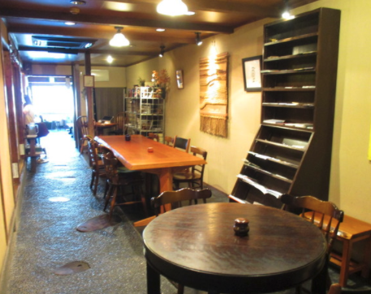
★おすすめの候補2：総本家 ゆどうふ 奥丹清水
豆腐料理
ゆどうふ 奥丹清水
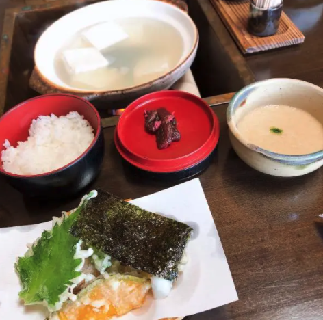
★京八坂プリン
食後に
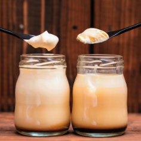
ドドド定番！最近工事が終わったらしい
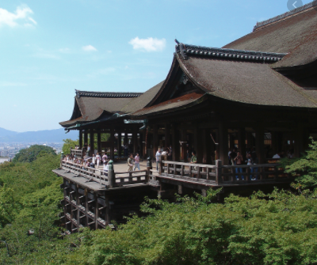
・スターバックスコーヒー 京都二寧坂ヤサカ茶屋店
畳もあるコンセプトストア。ここは行きたい！
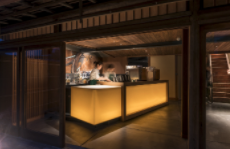
・周辺観光
カフェもあるし色々お店もある
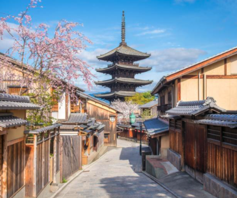
・京都駅へ
バスで15分ぐらい。場所によっては駅から電車乗ってもOK
● プラン2 〜 京都を優雅みに過ごす 〜
＜京都駅＞
・軽食
京都駅周辺でカフェってもいいし、アフタヌーンティーについてるところもある
＜各ホテル最寄りの駅＞
・アフタヌーンティーで京都を優雅に。広いところが多いので密ではないはず。予約は早めに
★おすすめの候補1：ザ・リッツ・カールトン京都（京都市役所駅前（京都駅から20分ぐらい））
なんか美味しそう！
＜メニュー＞
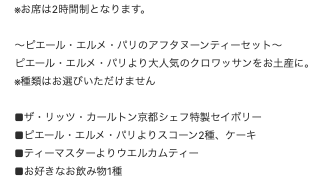
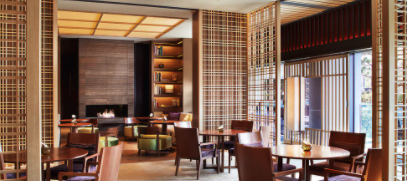
★おすすめの候補2：THE THOUSAND KYOTO（京都駅）
昼食付き
＜メニュー＞
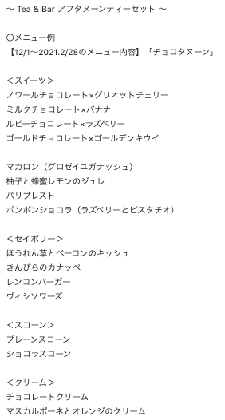
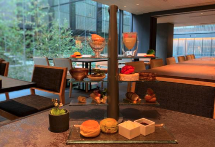
★おすすめの候補3：京都ブライトンホテル（今出川駅前（京都駅から20分ぐらい））
昼食付き
＜メニュー＞
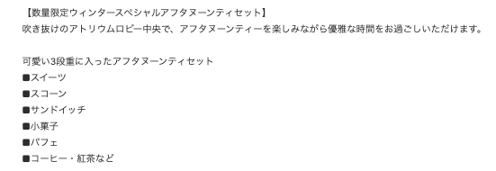
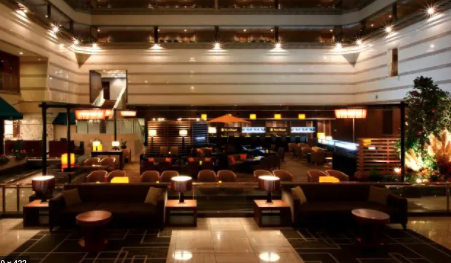
★おすすめの候補4：THE THREE BEARS（四条駅（京都駅の隣駅）
2月中はコロナで休み。3月はどうかわからないけど、復活したらよさそう。コースではない
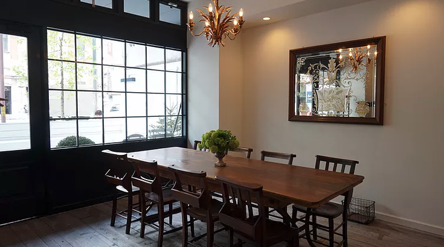
★おすすめの候補5：京都東急ホテル（京都駅から歩いて20分）
2月中はコロナで休み。3月はどうかわからないけど、ここもよさそう
＜メニュー＞
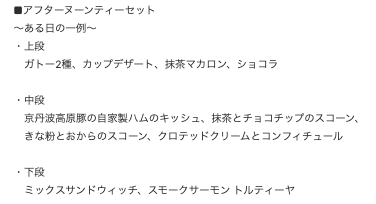
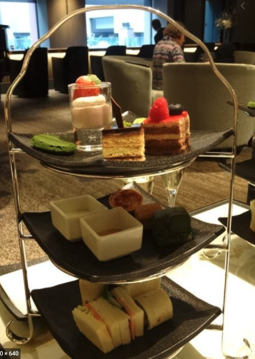
★他もあるから探してみて！
＜京都駅＞
・荷物回収
・夕食（未定）
・解散；；
気をつけて帰ってね！